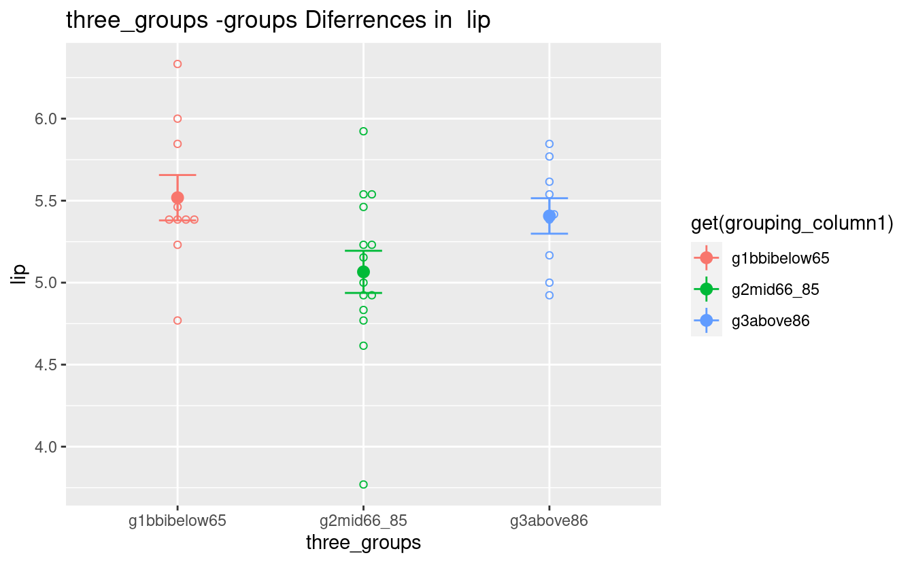
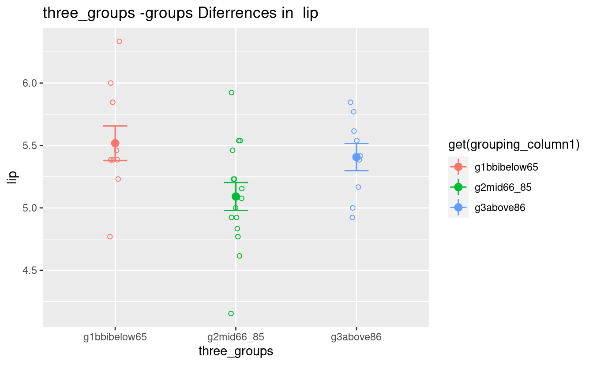
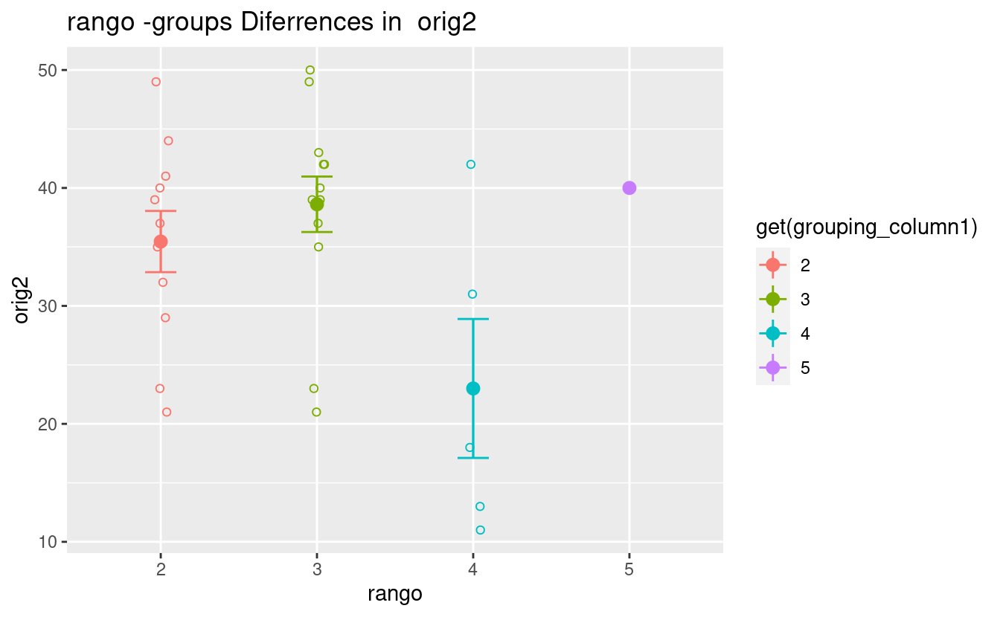
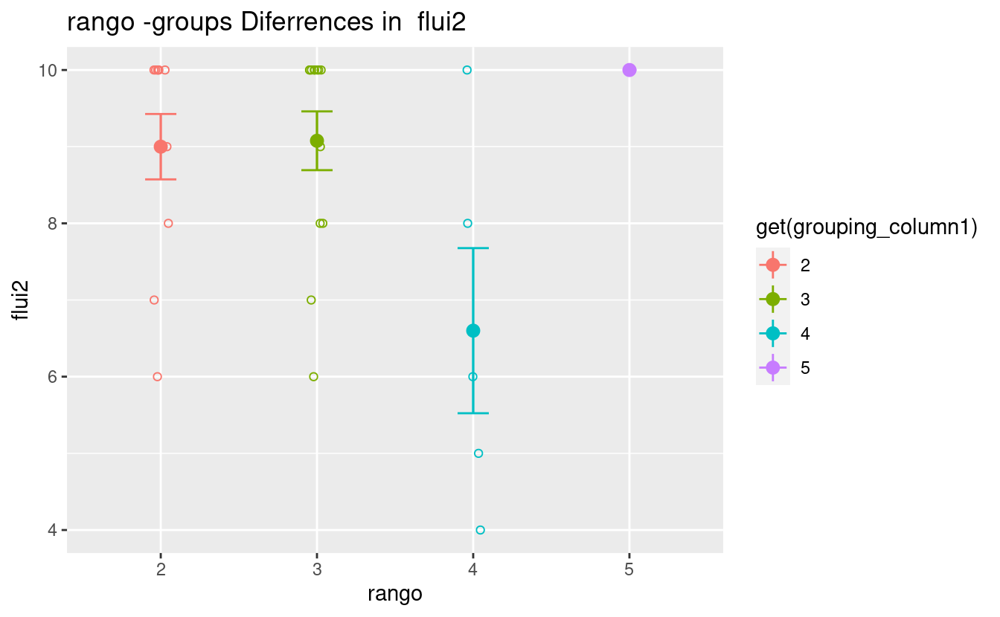
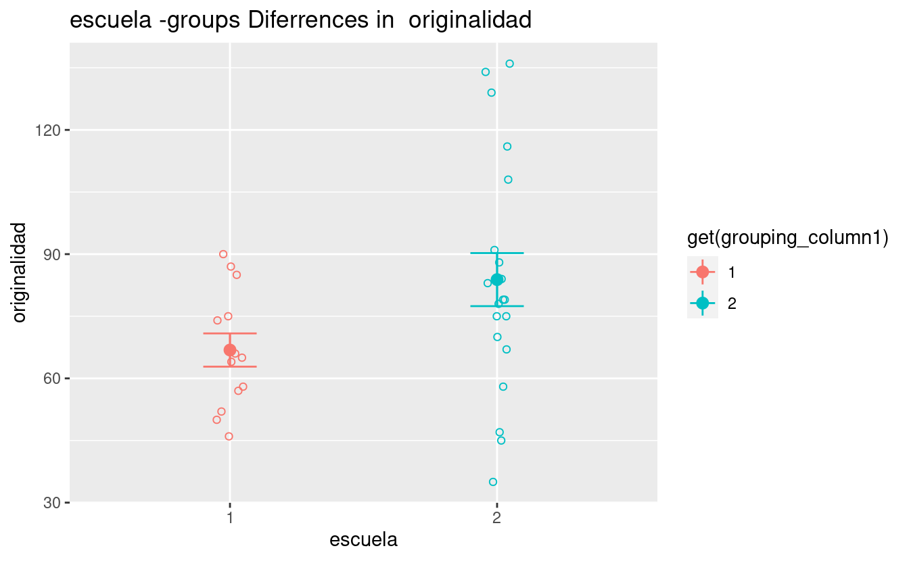

Significant differences among groups
Divided by percentiles
- Two groups above and below-equal median (75 percentile)
- Three groups with 66 and 86 percentiles
Percentile-groups Differences in Raven
#> [1] "=== NO SIGNIFICANT RESULTS ==="Percentile-groups Differences in Subdimensions
#> $attfoc
#> $attfoc$three_groups
#> .xg2mid66_85
#> 0.02424647
#>
#>
#> $attcon
#> $attcon$three_groups
#> .xg2mid66_85
#> 0.02412713
#>
#>
#> $fea
#> $fea$three_groups
#> .xg2mid66_85
#> 0.04849844
#>
#>
#> $inh
#> $inh$median_grp
#> [1] 0.03230483
#>
#>
#> $lip
#> $lip$three_groups
#> .xg2mid66_85
#> 0.01570031
#>
#>
#> [1] "attfoc three_groups"
#> [1] "attcon three_groups"
#> [1] "fea three_groups"
#> [1] "inh median_grp"
#> [1] "lip three_groups"
#> [1] "=== GROUP DIFFERENCES GRAPH ==="
#> [1] "=== DESCRIPTIVE STATS OF attfoc IN three_groups GROUPS ==="
#> # A tibble: 3 × 4
#> three_groups mean sd num
#> <fct> <dbl> <dbl> <int>
#> 1 g1bbibelow65 4.86 0.583 10
#> 2 g2mid66_85 4.33 0.314 15
#> 3 g3above86 4.56 0.758 9
#> [1] "=== GROUP DIFFERENCES GRAPH ==="
#> [1] "=== DESCRIPTIVE STATS OF attcon IN three_groups GROUPS ==="
#> # A tibble: 3 × 4
#> three_groups mean sd num
#> <fct> <dbl> <dbl> <int>
#> 1 g1bbibelow65 4.78 0.557 10
#> 2 g2mid66_85 4.31 0.342 15
#> 3 g3above86 4.44 0.577 9
#> [1] "=== GROUP DIFFERENCES GRAPH ==="
#> [1] "=== DESCRIPTIVE STATS OF fea IN three_groups GROUPS ==="
#> # A tibble: 3 × 4
#> three_groups mean sd num
#> <fct> <dbl> <dbl> <int>
#> 1 g1bbibelow65 4.03 0.632 10
#> 2 g2mid66_85 4.54 0.563 15
#> 3 g3above86 4.38 0.629 9
#> [1] "=== GROUP DIFFERENCES GRAPH ==="
#> [1] "=== DESCRIPTIVE STATS OF inh IN median_grp GROUPS ==="
#> # A tibble: 2 × 4
#> median_grp mean sd num
#> <fct> <dbl> <dbl> <int>
#> 1 g1below75 4.95 0.656 17
#> 2 g2above75 4.52 0.438 17
#> [1] "=== GROUP DIFFERENCES GRAPH ==="
#> [1] "=== DESCRIPTIVE STATS OF lip IN three_groups GROUPS ==="
#> # A tibble: 3 × 4
#> three_groups mean sd num
#> <fct> <dbl> <dbl> <int>
#> 1 g1bbibelow65 5.52 0.437 10
#> 2 g2mid66_85 5.09 0.432 15
#> 3 g3above86 5.41 0.325 9Percentile-groups Differences in the three broad dimensions
#> $CE
#> $CE$three_groups
#> .xg2mid66_85
#> 0.009695796
#>
#>
#> [1] "CE three_groups"
#> [1] "=== GROUP DIFFERENCES GRAPH ==="
#> [1] "=== DESCRIPTIVE STATS OF CE IN three_groups GROUPS ==="
#> # A tibble: 3 × 4
#> three_groups mean sd num
#> <fct> <dbl> <dbl> <int>
#> 1 g1bbibelow65 5.01 0.436 10
#> 2 g2mid66_85 4.64 0.242 15
#> 3 g3above86 4.71 0.319 9Results from Analysis of Differences Among Groups
- Categorical Variables are used as predictors
- Torrance Numeric Variables are used as responses
Torrance Percentiles
#> [1] "=== NO SIGNIFICANT RESULTS ==="Torrance Partials
#> $elab1
#> $elab1$grupo
#> .x4
#> 0.04169034
#>
#>
#> $orig2
#> $orig2$rango
#> .x4
#> 0.02103123
#>
#>
#> $flui2
#> $flui2$rango
#> .x4
#> 0.009731103
#>
#>
#> $orig3
#> $orig3$grupo
#> .x4
#> 0.01866077
#>
#>
#> [1] "elab1 grupo"
#> [1] "orig2 rango"
#> [1] "flui2 rango"
#> [1] "orig3 grupo"
#> [1] "=== GROUP DIFFERENCES GRAPH ==="
#> [1] "=== DESCRIPTIVE STATS OF elab1 IN grupo GROUPS ==="
#> # A tibble: 4 × 4
#> grupo mean sd num
#> <fct> <dbl> <dbl> <int>
#> 1 1 1.77 1.74 13
#> 2 2 1.33 1.53 3
#> 3 3 2.44 1.13 9
#> 4 4 3.4 0.894 5
#> [1] "=== GROUP DIFFERENCES GRAPH ==="
#> [1] "=== DESCRIPTIVE STATS OF orig2 IN rango GROUPS ==="
#> # A tibble: 4 × 4
#> rango mean sd num
#> <fct> <dbl> <dbl> <int>
#> 1 2 35.5 8.61 11
#> 2 3 38.6 8.48 13
#> 3 4 23 13.2 5
#> 4 5 40 NA 1
#> [1] "=== GROUP DIFFERENCES GRAPH ==="
#> [1] "=== DESCRIPTIVE STATS OF flui2 IN rango GROUPS ==="
#> # A tibble: 4 × 4
#> rango mean sd num
#> <fct> <dbl> <dbl> <int>
#> 1 2 9 1.41 11
#> 2 3 9.08 1.38 13
#> 3 4 6.6 2.41 5
#> 4 5 10 NA 1
#> [1] "=== GROUP DIFFERENCES GRAPH ==="
#> [1] "=== DESCRIPTIVE STATS OF orig3 IN grupo GROUPS ==="
#> # A tibble: 4 × 4
#> grupo mean sd num
#> <fct> <dbl> <dbl> <int>
#> 1 1 27.2 12.9 13
#> 2 2 33.7 10.6 3
#> 3 3 31.9 16.3 9
#> 4 4 47.2 20.2 5Torrance Totals (Aggregated Variables)
-
Only marginally significant, p < 0.06, differences
#> $originalidad #> $originalidad$escuela #> [1] 0.05726995 #> #> $originalidad$grupo #> .x2 .x4 #> 0.03039469 0.03787579 #> #> $originalidad$edad #> .x8 #> 0.02026583 #> #> #> $fluidez #> $fluidez$grupo #> .x4 #> 0.03174777 #> #> $fluidez$edad #> .x8 #> 0.02982713 #> #> #> $flexibilidad #> $flexibilidad$edad #> .x8 #> 0.0519162 #> #> #> $creatividad #> $creatividad$edad #> .x8 #> 0.0246007 #> #> #> [1] "originalidad escuela" #> [1] "originalidad grupo" #> [1] "originalidad edad" #> [1] "fluidez grupo" #> [1] "fluidez edad" #> [1] "flexibilidad edad" #> [1] "creatividad edad" #> [1] "=== GROUP DIFFERENCES GRAPH ==="
#> [1] "=== DESCRIPTIVE STATS OF originalidad IN escuela GROUPS ===" #> # A tibble: 2 × 4 #> escuela mean sd num #> <fct> <dbl> <dbl> <int> #> 1 1 66.8 14.5 13 #> 2 2 83.8 28.6 20 #> [1] "=== GROUP DIFFERENCES GRAPH ==="#> [1] "=== DESCRIPTIVE STATS OF originalidad IN grupo GROUPS ===" #> # A tibble: 4 × 4 #> grupo mean sd num #> <fct> <dbl> <dbl> <int> #> 1 1 66.8 14.5 13 #> 2 2 101 29.3 3 #> 3 3 74.7 26.1 11 #> 4 4 92 31.2 6 #> [1] "=== GROUP DIFFERENCES GRAPH ==="
#> [1] "=== DESCRIPTIVE STATS OF originalidad IN edad GROUPS ===" #> # A tibble: 3 × 4 #> edad mean sd num #> <fct> <dbl> <dbl> <int> #> 1 6 73.9 26.6 16 #> 2 7 76.9 20.6 16 #> 3 8 134 NA 1 #> [1] "=== GROUP DIFFERENCES GRAPH ==="
#> [1] "=== DESCRIPTIVE STATS OF fluidez IN grupo GROUPS ===" #> # A tibble: 4 × 4 #> grupo mean sd num #> <fct> <dbl> <dbl> <int> #> 1 1 15.5 2.67 13 #> 2 2 21 6.24 3 #> 3 3 16.3 4.82 11 #> 4 4 21 7.77 6 #> [1] "=== GROUP DIFFERENCES GRAPH ==="
#> [1] "=== DESCRIPTIVE STATS OF fluidez IN edad GROUPS ===" #> # A tibble: 3 × 4 #> edad mean sd num #> <fct> <dbl> <dbl> <int> #> 1 6 16.3 4.76 16 #> 2 7 17.6 5.18 16 #> 3 8 28 NA 1 #> [1] "=== GROUP DIFFERENCES GRAPH ==="
#> [1] "=== DESCRIPTIVE STATS OF flexibilidad IN edad GROUPS ===" #> # A tibble: 3 × 4 #> edad mean sd num #> <fct> <dbl> <dbl> <int> #> 1 6 13.6 3.38 16 #> 2 7 13.2 3.68 16 #> 3 8 21 NA 1 #> [1] "=== GROUP DIFFERENCES GRAPH ==="#> [1] "=== DESCRIPTIVE STATS OF creatividad IN edad GROUPS ===" #> # A tibble: 3 × 4 #> edad mean sd num #> <fct> <dbl> <dbl> <int> #> 1 6 116. 33.6 16 #> 2 7 124. 34.2 16 #> 3 8 199 NA 1